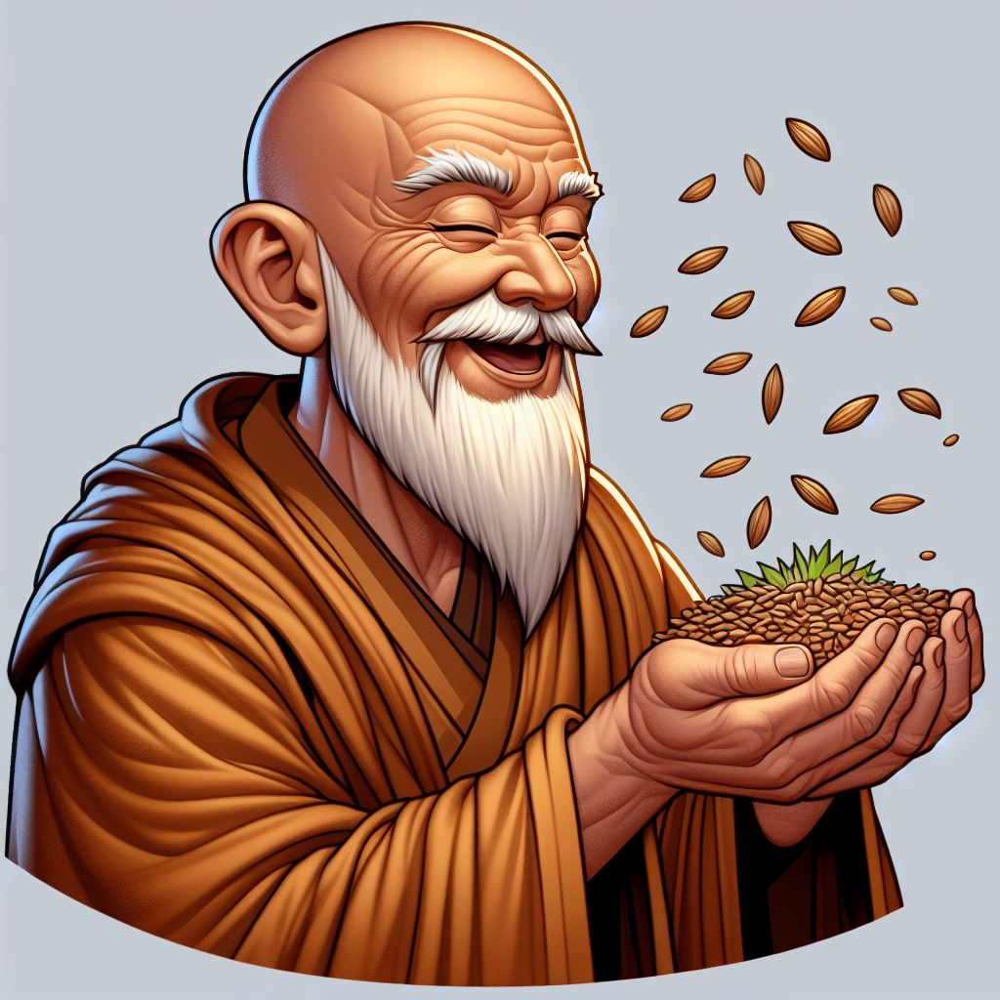

O Sábio e as Sementes Magicas

Um dia chegou na sua fazenda um estranho visitante, que parecia ser um sábio monge.
Ele era feliz e sorridente e como agradecimento pela hospedagem, deu ao fazendeiro
um punhado de sementes e disse que elas eram magicas.